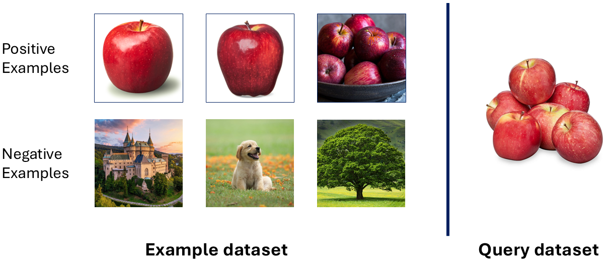
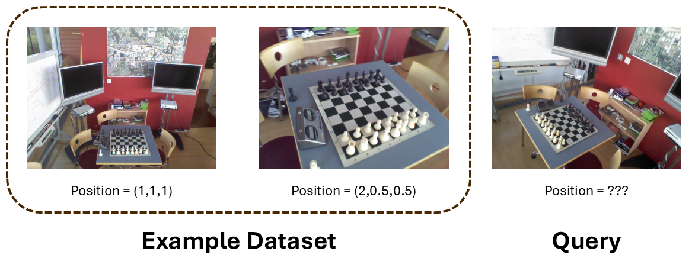

Experimental Results
We compare function encoders against state-of-the-art transfer learning algorithms on four different datasets.
The first is simple polynomial regression, and this example is designed to highlight the failure modes of other approaches.
The other three datasets are more challenging: Few-shot image classification for CIFAR, Pose estimation on the seven scenes dataset, and dynamics prediction for a MuJoCo ant.
For each dataset, we also separately evaluate each type of transfer, and we show that the function encoder outperforms prior works, such as transformers, meta learning, and auto-encoders, on all three types of transfer.
An Illustrative Polynomial Example
In this example, the algorithms estimate a polynomial function from a few data points. The training set consists of quadratic functions.
Type 1 transfer are function sampled from the same distribution as the training set.
Type 2 transfer are functions that are much larger in magnitude then anything in the training set, but still quadratic.
Type 3 transfer is cubic functions.
To illustrate this, we provide a simple qualitative example comparing the function encoder against auto-encoders.
_no_background.png)
We observe that both approaches achieve reasonable performance for type 1 transfer.
For type 2 transfer, the target function is much larger in magnitude than any function in the training set.
The auto encoder fails at this function because it has only learned to output functions from the training function space.
In contrast, the function encoder generalizes to the entire span of the training function space by design.
For type 3 transfer, the target function is a cubic function.
The auto encoder nonetheless outputs a function that is similar to the ones seen during training.
When using a function encoder with only three basis functions, the basis functions only span the three-dimensional space of quadratic functions, and so its approximation is the best quadratic to fit the data.
When using 100 basis functions, the basis functions spans the space of quadratics, but additionally have 97 unconstrained dimensions.
Due to the use of least squares, the function encoder with 100 basis functions optimally uses these extra 97 dimensions to fit the new function.
Therefore, it is able to reasonable approximate this function as well, despite having never seen a cubic function during training.
The quantitative results are shown here:
_no_background.png)
All prior works such as meta-learning and transformers fail on type 2 and type 3 transfer, even for a simple 1-dimensional polynomial regression problem.
Few-Shot Image Classification
Due to the broad applicability of Hilbert spaces, we can apply the function encoder to many settings.
To highlight this, we apply it to the few-shot image classification problem on the CIFAR dataset.
In this setting, the model is given some positive examples showing what the class looks like. It is also given some negative examples of images belonging to other classes.
Then, for any new class, the model should predict if the specified class is present in the image.

We use 90 of the 100 classes for training. Type 1 transfer consists of unseen images from these 90 classes.
Type 2 transfer is not easily testable, but would consists of images that belong to two classes at once.
Type 3 transfer is the 10, unseen classes.
The training results are shown below:
_no_background.png)
In addition to the typical baselines, we also compare against Siamese networks. The results show that function encoders perform
even better than Siamese networks on this problem, despite the fact that Siamese networks are designed explicitly for this setting.
All other approaches perform poorly, which highlights the difficulty of this problem.
Pose Estimation
Another interesting problem that can be expressed as a Hilbert space is pose estimation.
The model is provided with a set of images and the location of the camera when these images were taken.
Then, for any new image, the model should predict the location of the camera.

We use the 7 scenes dataset, which consists of 7 different scenes. The model is trained on 6 of these scenes. Unseen images from these 6 scenes are
used for type 1 transfer. Type 2 transfer would consist of shifting the origin or scaling the units. The seventh scene is used for type 3 transfer.
_no_background.png)
Many approaches converge during training. As expected, all approaches perform much worse at type 1 transfer, indicating a degree of over-fitting. The function encoder performs best at both type 1 and type 3 transfer, indicating its ability to optimally use the learned features for unseen data.
Hidden-Parameter Dynamics Estimation for MuJoCo
Lastly, we run experiments on a hidden-parameter version of the MuJoCo Ant. The algorithm is given data
from the beginning of a trajectory, and it must estimate the dynamics going forward. The training dataset consists of small robots.
Type 1 transfer consists of robots sampled from the same hidden-parameter distribution as training. Type 2 transfer is evaluated via
synthetically generated data consisting of the linear combination of the dynamics present in type 1. Type 3 transfer are robots that are much larger in size than the training set.
We visualize these robots below:
.png)
_no_background.png)
All algorithms demonstrate convergence during training, albeit to various levels. However, many algorithms perform much worse for type 1 transfer.
The function encoder performs best, although many approaches, such as the transformer and MAML(n=5), are comparable.
Furthermore, the function encoder is clearly best for type 2 transfer. Type 3 transfer tells an interesting story.
The function encoder has the best stable performance, although approaches such as the transformer and the auto encoder are not far behind.
At the beginning of training, the auto encoder shows the best overall performance, although it degrades as training continues.
This is because training is not optimizing for type 3 transfer, and the best model parameters for the training dataset are not the best model parameters for type 3 transfer.
Thus, its performance is unstable.